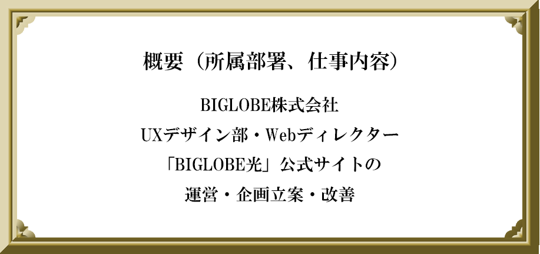
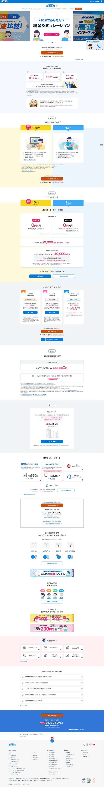
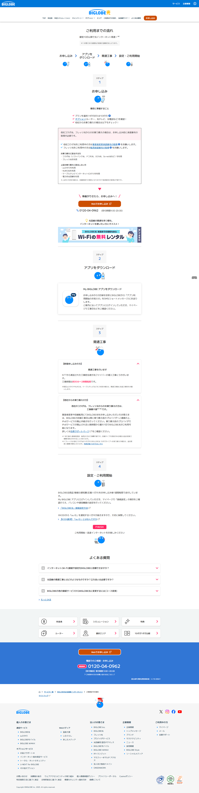
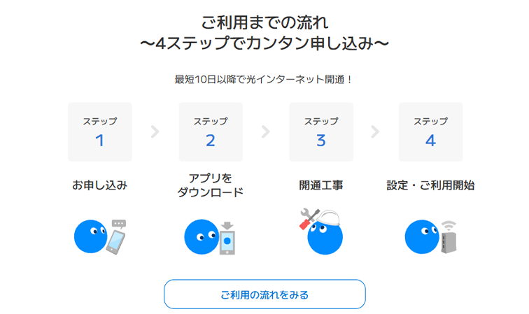
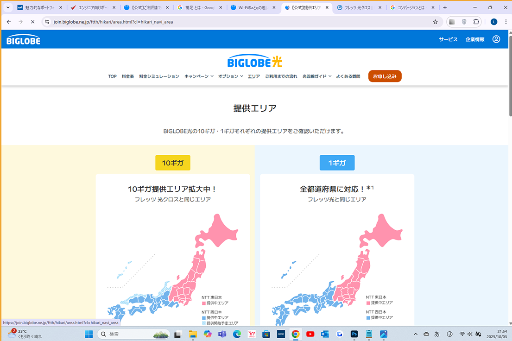
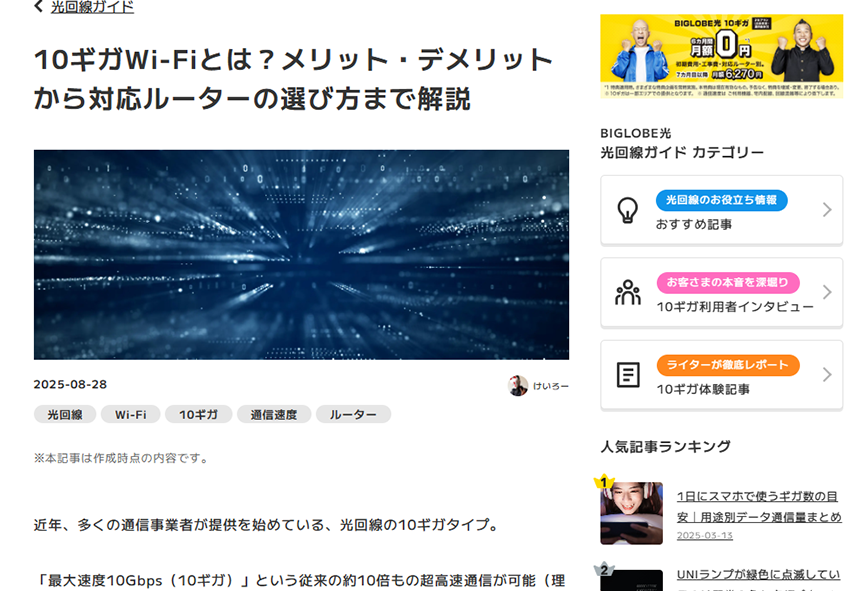
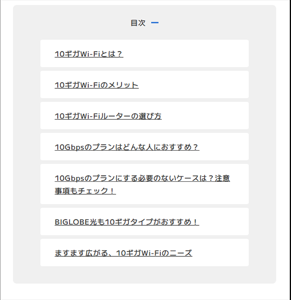
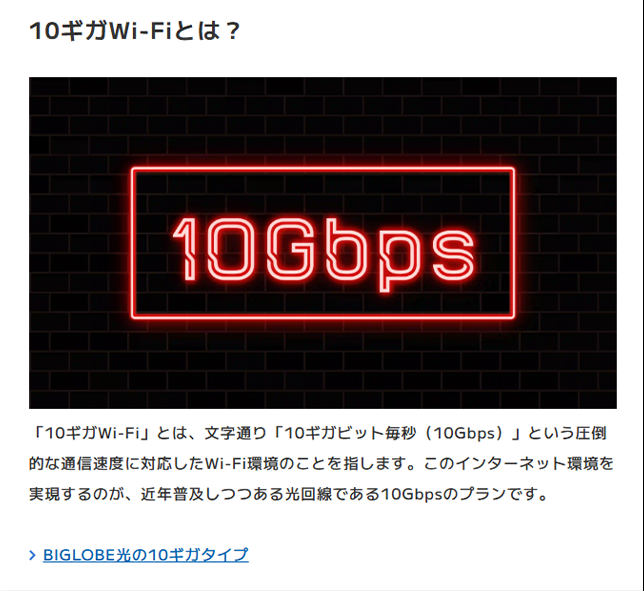
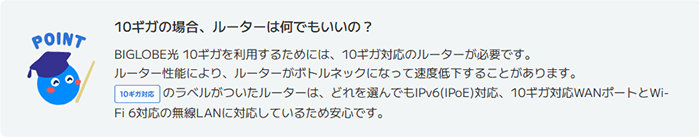
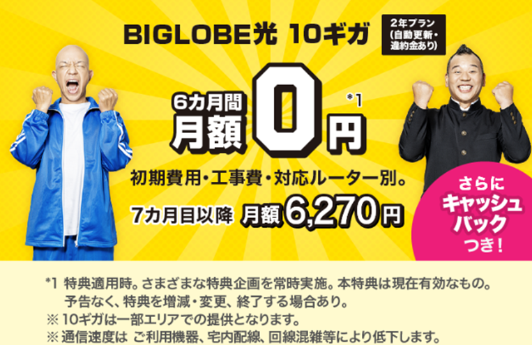

担当したサービス①
「BIGLOBE光ご利用までの流れ」ページ
URL：https://join.biglobe.ne.jp/ftth/hikari/connect.html

制作年月日：2024年11月～2025年1月
制作時間：約3か月
作業工程：
①AdobeXDでWebデザイナー・コーダーの方向けの指示書を作成
②コーダーの方に依頼→チェック・修正（自己チェック＆上司チェック）
③Webデザイナーの方に依頼→チェック・修正（自己チェック＆上司チェック）
④最終チェック
⑤反映
使用ソフト：
AdobeXD、Jira（タスク管理）、Google Chat、Google Meet
詳細：
BIGLOBE光の申し込みを検討中の方に向けて、ご利用開始までの流れを見せ方を改善しました。もともとこのページは数年間企業も手を付けておらず、改善前は書類や工事の詳細が文字ベースで書かれており、全体的に見にくい印象でした。
入社後、自身もBIGLOBE光の回線契約をしたのですが、回線申し込みの際、様々なプラン・キャンペーンが存在する中、何を決めれば良いのか迷ったり、専門用語（コラボ光、転用と事業者変更の違い、承諾番号等）が理解できなかったり、工事の前に行う事前準備は何か・工事にどれぐらいの時間がかかるのか分からないなどの疑問点が生まれました。
これらの課題を踏まえて、改善の際には、「分かりやすい言葉で、工程を簡単に理解できる」を意識し、専門用語には補足を加えながら、お客様がこのページを順に読み進めれば迷いなく回線契約までたどり着けるような構成に作り変えました。また、イメージキャラクターを使ってご利用開始までの図を盛り込み、固くなりすぎないように心掛けました。改善後、コンバージョン率の改善が見られました。
プロジェクトは、17人程で進めました。
トップページのデザインも一部担当しました。

担当したサービス②
「BIGLOBE光提供エリア」ページ
URL：https://join.biglobe.ne.jp/ftth/hikari/area.html

制作年月日：2024年9月、11月、12月（計3回更新）
制作時間：約2週間/回
作業工程：
①BIGLOBE光・提供開始予定エリアの
元データと照らし合わせながら更新情報を確認し、AdobeXDでWebデザイナー・コーダーの方向けの指示書を作成
②コーダーの方に依頼→チェック・修正（自己チェック＆上司チェック）
③Webデザイナーの方に依頼→チェック・修正（自己チェック＆上司チェック）
④最終チェック
⑤反映
使用ソフト：
AdobeXD、jira、Google Sheets、Google Chat、Google Meet、Google Spread Sheet
詳細：
サイトを訪れたユーザーに、徐々に拡大されていくBIGLOBE光の日本全国の提供エリアを示すため、数回にわたりサイトの更新を担当しました。作業の際は、更新に伴う地図の中身・テキスト変更のダブルチェックを行うことで情報の漏れ・抜けを防ぎ、お客様に常に最新かつ正確な情報を提供しました。プロジェクトは、7人程で進めました。
担当したサービス③
「しむぐらし」
URL：https://join.biglobe.ne.jp/mobile/sim/gurashi/

「しむぐらし」記事例


制作年月日：2024年11月、12月（計2回更新）
制作時間：約3週間/回
作業工程：
しむぐらし…BIGLOBEが運営する情報メディア。
①元記事のリライトをはじめ、古くなったバナーや情報の削除、その他hタグの見直しなどHTMLの修正、さらに、移管にあたるURL変更も行いました。これらをすべて記載した指示書をAdobeXDにて作成。
②上司のチェック後、コーダーの方に依頼、返ってきた戻しを確認し、2、3度修正を行いました。
④最終チェック後、反映。
使用ソフト：
AdobeXD、jira、Google Sheets、Google Chat、Google Meet、Google Document
プロジェクトは、約9人で進めました。
その他関わったサービス


出典：
製作者…ビッグローブ株式会社
Webサイト…
・「BIGLOBE光」【公式】光回線ならBIGLOBE光(ビッグローブ光)参照 2025-10-06）
https://join.biglobe.ne.jp/ftth/hikari/
・「しむぐらし 格安SIMでちょっと良い暮らし 」
（参照 2025-10-06）
https://join.biglobe.ne.jp/mobile/sim/gurashi/
・けいろー「10ギガWi-Fiとは？メリット・デメリットから対応ルーターの選び方まで解説」BIGLOBE光
（参照 2025-10-06）
https://join.biglobe.ne.jp/ftth/hikari/guide/0119/